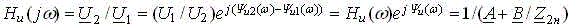
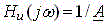
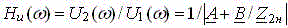
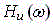
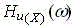
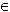
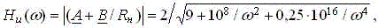
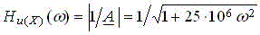
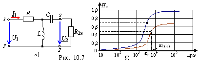
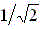

4. КОЭФФИЦИЕНТ ПЕРЕДАЧИ И АМПЛИТУДНО-ЧАСТОТНАЯ ХАРАКТЕРИСТИКА ЧЕТЫРЕХПОЛЮСНИКА
Комплексный коэффициент передачи ЧП при произвольной нагрузке

(в режиме ХХ ЧП ) и его амплитудно-частотная характеристика (АЧХ) по напряжению (снимаемая при помощи двух вольтметров при изменении частоты f входного синусоидального напряжения u1)

также зависят не только от частоты сигнала, но и от характера нагрузки.
В качестве примера на рис. 10.7, б построены АЧХ по напряжению нагруженного  и ненагруженного  ЧП (рис. 10.7, а) с параметрами: R = 100 Ом; L = 20 мГн; C = 1 мкФ; Rн = 200 Ом в диапазоне частот ω (0; 10n), где n = 0, 1,…., 5.
Для нагруженного ЧП функция,

где A = 1 + R/j(L = 1- j5000/ω;
B = R - jXC - jRXC/jXL = 100 - 5(109/( 2 - j106/ω,
а для ненагруженного
.

Заметим, что частота среза ωc 4.103 рад./сек нагруженногоЧП при Нu/Hu.max = уменьшилась по сравнению с частотой ωc(Х) 5.103 рад/с ЧП в режиме ХХ; уровень выходного сигнала также уменьшился.